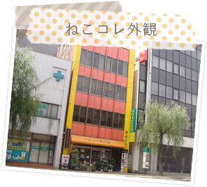
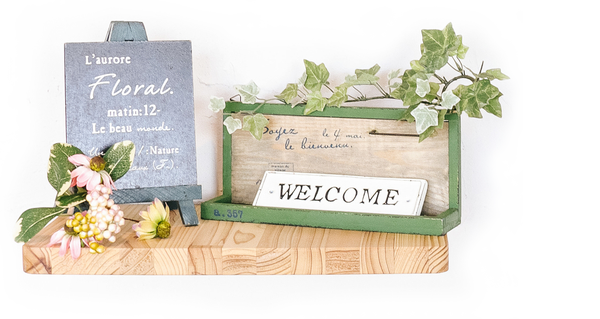
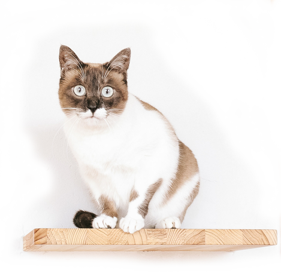

交通アクセス
- 「新潟市役所前」バス停から徒歩7分
- 「白山駅」から徒歩20分
- 提携駐車場 無し（近隣に有料駐車場有り）

電話番号
080-1844-1446※電話での対応はOPEN～19:30となりますのでご了承ください

営業時間・休業日
- 月～金
11:00～20:00(最終受付 19:30) - 土・日・祝日
10:00～20:00(最終受付 19:30)
※基本的には毎日営業いたします（年始はお休み、不定休)
※緊急の際は、営業時間が前後する場合がございます